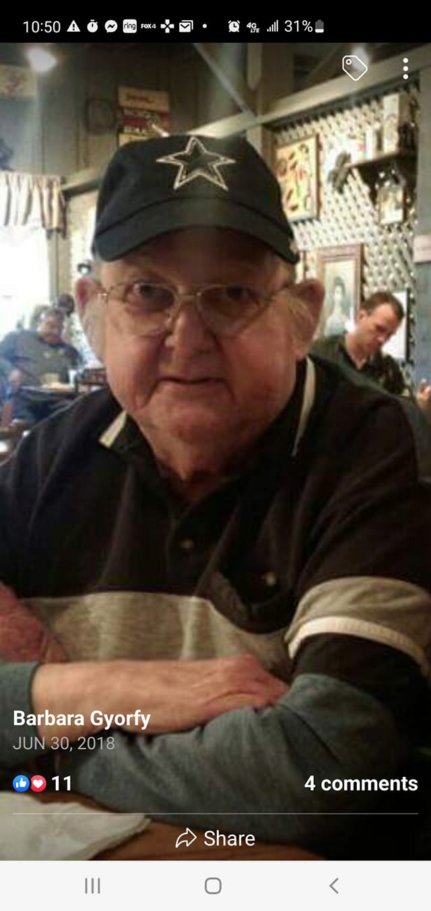

E-SYSTEMS/RAYTHEON RETIREES LUNCH GROUP
By Eileen Wahlstrom
March 30, 2022
Present: 28
First Time: Gary Hunt, David Sokatch, Robert Clarkson, Mary Ann Cordova, Larry Wadsworth
Long Time: Kevin Tensley, Al Walker
Guests: 0
SICKNESS:
Bruce King is still getting treatment for his cancer.
Deaths
Phillip Joe Harrison
January 1953 – March 16, 2022j
iPhillip Joe Harrison, 69, of Greenville, Texas passed away surrounded by family on March 16, 2022. Phillip was born in Paris, Texas to Van Buren Harrison and Edna Mae McGee on January 18, 1953.
Phillip, also known as “Joe”, “Dad”, “Phil”, “Poppy”, “Wild Man” and “Pop” married the love of his life, Kenda, in 1974 and spent the next 47 years loving her unconditionally. He was a loving family man and a wonderful father and grandfather who not only raised his own family but also took in other children to love and nurture. He loved to play the guitar and was employed at E-Systems/Raytheon/L3 Harris for 46 years.
Phillip is survived by his wife, Kenda; daughters, Kerena Talley, Phylicia McDonald (Thomas) and Andrea Harrison; brother, Terry Harrison; thirteen grandchildren, 11 great grandchildren, and 2 nephews.
Phillip was preceded in death by his parents and brother, Ricky Harrison.
The family hosted a Celebration of Life on Monday, March 21, 2022, 2:00 pm, at Top Rails Cowboy Church, 262 Horseman’s Road, Greenville, Texas, 75401. In lieu of flowers, the family request donations be made to your favorite charity.
Obituary: Click here
Jeff Gyorfy
March 11, 2022

Jeff Gyorfy passed away Friday morning, March 11. He was a reliability engineer at the E-Systems Garland Division. There will be a memorial service in Dallas, details to be announced later.
Victor Vitrano
March 14, 2022
From Greg - Vic's son - He passed away last Monday (March 14) from neck cancer that metastasized to his jaw and throat. Like Sandy before him, he didn't want a funeral or a memorial service. He really enjoyed playing golf with the group and talked about it often. Will you please let the group know. Thanks
Announcements
Mailing FSA Claims
You can still mail Medical Claims for reimbursement.
Use the old form and mail the claim to:
Alight Smart Choice Solutions
PO Box 64009
The Woodlands, TX
77387
If anyone is interested the 1099-R is available for your pension. Go to rtxpensioncenter.com, select Bank of New York Mellon, scroll to the bottom and you'll find "Tax Forms". You may have to use the slider bar, it's on the far right under Action.
Update: I think it’s pdf format only and you may need to tell your browser to allow popups for that website.
NOTE:
Paper pension statements will not be mailed out any longer. You must now view your pension statement on rtxpensioncenter.com. If your direct deposit looks off, better check. Some people have reported being double charged for their medical deductions (Dental, etc.).
Benefits Administrator Change
This info was posted on our Facebook group.
Alight has a benefits "Gateway" website that will be used for benefits administration. If you haven’t created an account yet you can use this link to do so, (https://rtxhealthyyou.com/enrollment-2"). The instructions indicate to go to www.yourtotalrewards.com/rtx and select "New user?". The "New user?" selection links to a couple of identifying questions and then steps you through the account setup. It recognized me and I was able to set up my account so I could create my profile and preferences. There’s also an online chat feature to talk with a benefits representative and find out additional details about benefits changes. They had my old employee email address in my profile and I had to call Alight to get that corrected (800-243-8135). Be sure to check your beneficiary information. This was blank for me so I corrected that.
Alight will manage the medical reimbursement and (if it works like intended) we will be able to check our DDB balance, submit claims, authorize direct deposit, etc. online.
RTX is also moving the 401K administration from Fidelity to Alight. The 401K change to Alight will not impact you if you've rolled over your 401K to personal IRA. www.yourtotalrewards.com
IF YOU NEED HELP SETTING UP YOUR ALIGHT ACCOUNT, REIMBURSEMENT CLAIMS, DIRECT DEPOSIT, ETC. PLEASE EMAIL ME AT emmawahlstrom@aol.com. TERRY GAUS HAS OFFERED TO HELP THE RETIREES WHO MAY HAVE QUESTIONS. I CAN ALSO HELP NAVIGATE THE SWAMP IF YOU NEED ASSISTANCE.
I’ll be turning in an order for magnetic name tags. Let me know if you want to order yours. One-line tags are $5.00- and two-line tags are $6.00. If anyone needs a name tag, please send your name (as you would like it on the name tag) to me, emmawahlstrom@aol.com or text it to me at 469-475-4884. A second line is optional if you want to include your service dates.
My Back Porch
On the first day, God created the dog and said, "Sit all day by the door of your house and bark at anyone who comes in or walks past. For this, I will give you a life span of twenty years."
The dog said, "That's a long time to be barking. How about only ten years and I'll give you back the other ten?"
And God saw it was good.
On the second day, God created the monkey and said, "Entertain people, do tricks, and make them laugh. For this, I'll give you a twenty-year life span."
The monkey said, "Monkey tricks for twenty years? That's a pretty long time to perform. How about I give you back ten like the dog did?"
And God, again saw it was good.
On the third day, God created the cow and said, "You must go into the field with the farmer all day long and suffer under the sun, have calves and give milk to support the farmer's family. For this, I will give you a life span of sixty years."
The cow said, "That's kind of a tough life you want me to live for sixty years. How about twenty and I'll give back the other forty?"
And God agreed it was good.
On the fourth day, God created humans and said, "Eat, sleep, play, marry and enjoy your life. For this, I'll give you twenty years."
But the human said, "Only twenty years? Could you possibly give me my twenty, the forty the cow gave back,
the ten the monkey gave back,
and the ten the dog gave back; that makes eighty, okay?"
"Okay," said God, "You asked for it."
So that is why for our first twenty years, we eat, sleep, play and enjoy ourselves.
For the next forty years, we slave in the sun to support our family.
For the next ten years, we do monkey tricks to entertain the grandchildren.
And for the last ten years, we sit on the front porch and bark at everyone.
Life has now been explained to you.
There is no need to thank me for this valuable information.
I'm doing it as a public service.
If you are looking for me I will be on the front porch...
Our next luncheon will be April 27th. Tell your fellow retirees!
I will resume collecting eye glasses for donation to the Lion’s Club.
Thank you all who have donated
Eileen Wahlstrom
Submit your Garland ESY/Raytheon stories now!!
ESY Ray